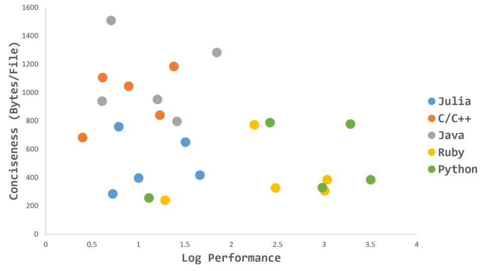

Synthèse des outils logiciels de l'année
Master IGAST 2020-2021
PC
Contenu de ce cours
- Bilan des outils
- Adéquation outil $\leftrightarrow$ tâche
- Approche réflexive : comment juger les outils ?
- Transmission Amélioration Continue
Évaluer les outils
⚠ Pas les langages, ni les services, ni les paradigmes, ni les méthodes
e.g. :
- «Python c'est mieux que Java à cause des notebooks Jupyter»
- «Julia c'est mieux que R à cause de l'exécution parallèle»
- «Bon courage pour faire une BD de plus de 10K tuples avec ACCESS, alors qu'avec NoSQL ça va tout seul»
Exemple de benchmark

Pas utile pour nous ici
Quelques sources de biais
- Expérience du développeur
- Degré d'optimisation
- Adéquation Logiciel/Matériel: Machine Lisp, CUDA sur GPU
- Configuration des applications: allocation mémoire de pgsql
- Systèmes d'exploitations concernés: Server Linux vs. Desktop Windows
- Dimensionnement: http://geoportail.ign.fr vs. http://lulu55.free.fr/rendu.html
- Type de données, structures de données disponibles nativement: e.g. index
Les critères adéquats pour vous ?
Liste à la Prévert
- Éditeurs : Spyder, PyScripter
- Langages : Python, PL/pgSQL, R
- Visualisation de données : R, Matplotlib
- SIG "desktop": Qgis, ArcGIS,
- Suite/librairie SIG : API QGis, pgrouting, SAGA, Grass, GDAL/OGR
- SGBD spatial : postgis,
- librairies statistiques : factomineR, clustgeo, sf
- GUI : Qt (dans Qgis), QT Designer
Exemples de critères (ils sont discutables)
- Correction & complétude
- Facilité d'utilisation & courbe d'apprentissage
- Facilité/Rapidité de mise en œuvre/déploiement
- Qualité de la documentation
- Clarté des messages d'erreur
- Abondance des exemples/tutoriels/stackOverflow & coolitude de la communauté
- Prix
- Attractivité sur le 'marché' de l'emploi
- Propriétaire / Libre
Quels sont vos critères ?
Pour transmettre à vos successeurs
Croisement tâches / critères
Quels sont les meilleurs outils pour des tâches générales, suivant vos critères.
Top 3,4,5 , non-ordonné
Pour afficher des données
Spatiales (cartographie, webmapping)
Non Spatiales (graphiques)
Pour importer des données
(flux de données, API du fournisseur de données , shapefile, csv)
Pour transformer des données
- Conversion de formats
- Changement de SCR
- Donnée statique $\rightarrow$ donnée en flux
Pour calculer, modifier , enrichir, mesurer, bidouiller des données
Pour exporter, rendre disponible les données
- format de données "portables"
- services "interopérables"
Faire cohabiter les outils
Plusieurs termes du jargon :
- écosystème logiciel
- stack technique
- architecture orientée composants
e.g. LAMP, postgis $\leftrightarrow$ pythonQgis $\leftrightarrow$ Leaflet , reticulate
Synthèse
Comment agréger tout ces éléments?
Fiche synoptique, grille d'analyse ?
Procéder par tâches, par outils, par critères ?
Tout à la fois ?
«Ce rapide aperçu démontre invinciblement que toutes les grandes acquisitions de l'industrie et de l'intelligence se sont faites avec une excessive lenteur et par des agrégations inaperçues, absolument comme procède la Nature. Pour arriver à leur perfection, l'écriture, le langage peut-être !... ont eu les mêmes tâtonnements que la typographie et la papeterie.»
Honoré de Balzac Les illusions perdues
Pour la télédec' : Importer/Exporter l'information
Pour la télédec' : Transformer l'information
Pour la télédec' : Calculer, modifier, enrichir, bidouiller les données